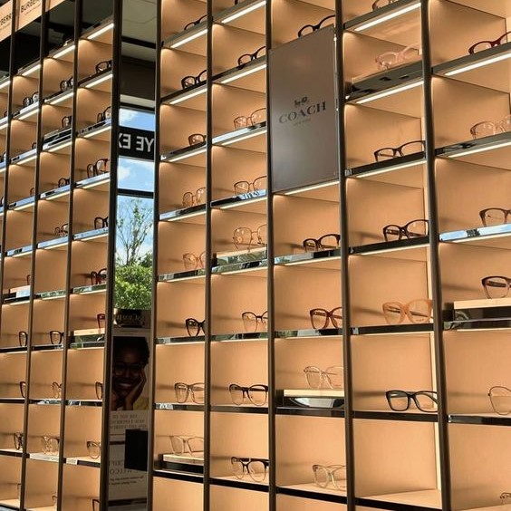

- Oct 04 22,2023
- 5
Điều Bạn Chưa Biết Về Kính Râm Có Độ Cận
Kính râm có độ cận được ra đời nhằm đáp ứng nhu cầu đa dạng của người dùng. Ikkuna sẽ giúp bạn tìm hiểu kỹ hơn về dòng kính này.
READ MORE
- Sep 23,2023
- 5
Top 8 loại thuốc nhỏ mắt tốt cho mắt cận bạn cần biết
Kính là một trong những phụ kiện quen thuộc trong đời sống của mỗi người nhưng chưa chắc mọi người đều biết về chất liệu gọng kính.
READ MORE

- Sep 16,2023
- 5
Các cửa hàng kính mắt Ikkuna mở cửa lúc mấy giờ?
Nhiều khách hàng vẫn chưa rõ thời gian hoạt động hàng ngày của Kính mắt Ikkuna. Hãy cùng tìm hiểu để ghé thăm chúng mình nhé!
READ MORE
- Sep 1,2023
- 5
Top 9 thực phẩm chứa vitamin tốt cho mắt của bạn
Hãy để Kính mắt Ikkuna liệt kê các loại vitamin tốt cho mắt để bạn có thể kịp thời bổ sung cho cơ thể mỗi ngày nhé!
READ MORE